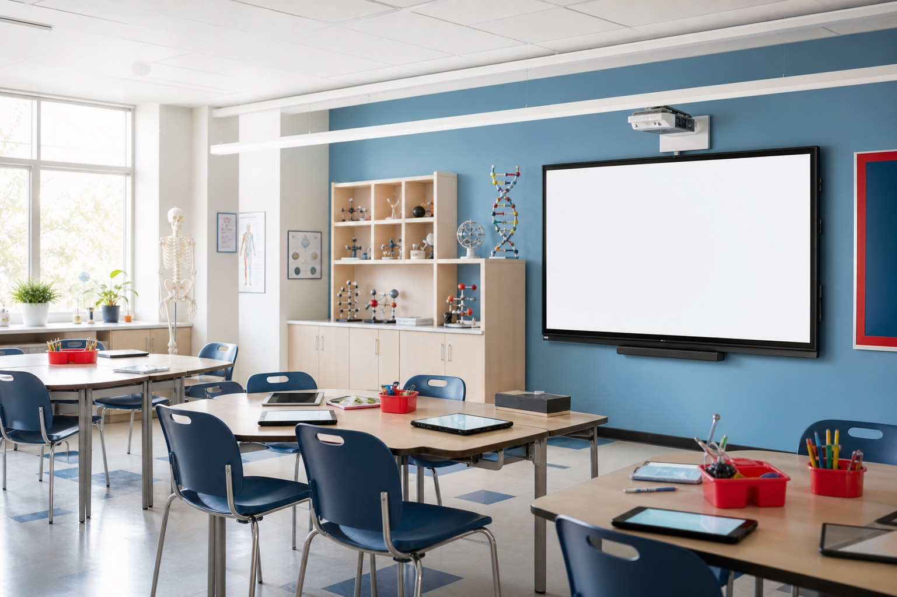
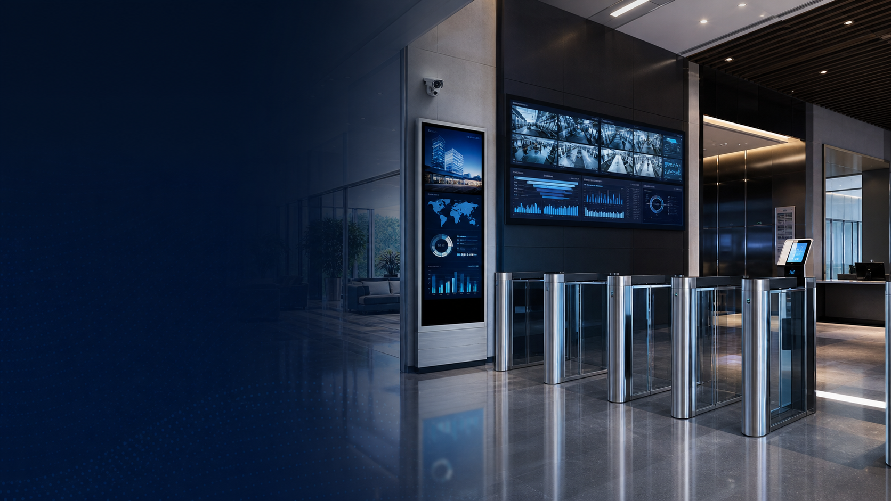

Penataan area kerja
Setiap siswa membutuhkan area kerja yang cukup untuk menggunakan komputer dan mengikuti kegiatan praktik dengan nyaman.
Memuat Lab Komputer
Lab Komputer
Ciptakan ruang lab komputer yang nyaman, fungsional, dan siap mendukung kegiatan praktik serta pembelajaran berbasis teknologi dengan perangkat komputer, furniture, dan fasilitas pendukung yang tepat.
Konsultasikan Kebutuhan Anda
Tantangan
Lab komputer digunakan oleh banyak siswa dan perangkat dalam waktu yang bersamaan. Penataan area kerja, kebutuhan perangkat, kelistrikan, serta kondisi ruang perlu diperhatikan agar aktivitas praktik dapat berjalan dengan baik.
Setiap siswa membutuhkan area kerja yang cukup untuk menggunakan komputer dan mengikuti kegiatan praktik dengan nyaman.
Penempatan komputer dan perangkat pendukung perlu diatur agar ruang tetap rapi, mudah digunakan, dan tidak mengganggu aktivitas siswa.
Penggunaan banyak perangkat komputer membutuhkan pengelolaan sumber daya listrik dan perangkat pendukung seperti UPS.
Sirkulasi, suhu ruangan, pencahayaan, dan penataan furniture perlu diperhatikan karena kegiatan praktik dilakukan dalam waktu yang cukup lama.
Solusi Kami
Dukung kegiatan praktik dan pembelajaran komputer dengan perangkat teknologi, area kerja siswa, area guru, serta fasilitas pendukung yang disesuaikan dengan kebutuhan laboratorium.

Komputer terintegrasi yang mendukung kegiatan praktik, pembelajaran digital, serta penggunaan berbagai aplikasi komputer.
Lihat detail
Kursi yang melengkapi area kerja siswa dan mendukung kenyamanan selama kegiatan belajar serta praktik komputer.
Lihat detail
Meja area kerja yang menyediakan area kerja untuk penggunaan PC dan mendukung kegiatan praktik komputer siswa.
Lihat detailMendukung guru dalam menyampaikan materi, memberikan demonstrasi, dan menampilkan informasi kepada seluruh siswa.
Lihat detail
Area kerja guru yang mendukung pengoperasian perangkat, penyampaian materi, dan pemantauan kegiatan siswa.
Lihat detail
Perangkat pendukung daya yang membantu menjaga kestabilan penggunaan komputer saat terjadi gangguan pada sumber listrik.
Lihat detailPerangkat Utama untuk Praktik Komputer
PC All in One menjadi perangkat utama yang digunakan siswa untuk menjalankan berbagai aktivitas pembelajaran dan praktik komputer. Desain komputer yang terintegrasi membantu membuat area kerja lebih ringkas dan tertata.
area kerja yang Mendukung Aktivitas Praktik
Meja siswa dirancang sebagai area kerja untuk menempatkan PC All in One dan perlengkapan pembelajaran. Penataan meja yang tepat membantu menciptakan area kerja yang teratur dan sesuai dengan kapasitas laboratorium.
Menunjang Kenyamanan Selama Praktik
Kursi siswa melengkapi area kerja dan digunakan selama kegiatan pembelajaran serta praktik komputer. Pemilihan kursi yang sesuai membantu siswa tetap nyaman ketika menggunakan komputer dalam waktu yang cukup lama.
Media untuk Menyampaikan Materi dan Demonstrasi
Smart TV menjadi media tampilan yang membantu guru menyampaikan materi, memberikan demonstrasi penggunaan aplikasi, serta menampilkan informasi kepada siswa di dalam laboratorium.
Dukungan Daya untuk Perangkat Komputer
UPS menjadi perangkat pendukung yang membantu menjaga ketersediaan daya ketika terjadi gangguan pada sumber listrik. Perangkat ini juga memberikan waktu bagi pengguna untuk menyimpan pekerjaan dan mematikan komputer dengan tepat.
Area Kerja untuk Mengelola Pembelajaran
Meja dan kursi guru menjadi area kerja untuk mengoperasikan perangkat, menyampaikan materi, serta memantau kegiatan siswa selama proses pembelajaran di laboratorium komputer.
FAQ
Laboratorium komputer adalah ruang pembelajaran yang dilengkapi komputer dan fasilitas pendukung untuk kegiatan praktik serta pembelajaran berbasis teknologi.
Lab komputer digunakan untuk mendukung pembelajaran, praktik komputer, penggunaan aplikasi, serta berbagai aktivitas berbasis teknologi.
Lab komputer dapat dilengkapi PC All in One, meja dan kursi siswa, Smart TV, UPS, meja dan kursi guru, serta fasilitas pendukung seperti AC, CCTV, dan sound system.
Komputer digunakan sebagai perangkat utama siswa untuk menjalankan aplikasi, mengakses materi digital, dan melakukan berbagai kegiatan praktik.
Perangkat utama dapat meliputi komputer, meja dan kursi siswa, media pembelajaran, UPS, serta perangkat pendukung yang disesuaikan dengan kebutuhan laboratorium.
Ukuran lab komputer dapat disesuaikan dengan jumlah pengguna, jumlah area kerja, tata letak perangkat, serta luas ruangan yang tersedia.
Ya. Tata letak area kerja, furniture, perangkat komputer, dan fasilitas pendukung dapat disesuaikan dengan ukuran serta kapasitas ruang.
Lengkapi ruang laboratorium dengan perangkat komputer, area kerja, media pembelajaran, dan fasilitas pendukung yang sesuai dengan kebutuhan sekolah.